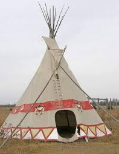
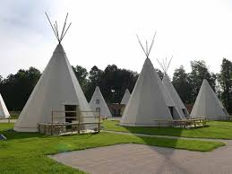

ما هي خيمة الهنود الحمر؟
خيمة الهنود الحمر، أو كما تُعرف بالـ "تيبي" (Tipi)، هي نوع من الخيام التي كانت تستخدمها العديد من قبائل الهنود الحمر في أمريكا الشمالية. تُصنع هذه الخيمة من أعمدة خشبية مغطاة بجلود الحيوانات مثل جلود الجاموس، وكانت تُستخدم كمأوى يمكن نقله بسهولة.
---------------------
كيف تنصب خيمة الهنود الحمر ؟
اختيار المكان المناسب: اختر مكانًا مسطحًا خاليًا من الحجارة والشجيرات.
إعداد الأعمدة: تحتاج إلى عدة أعمدة خشبية طويلة (حوالي 10-15 عمودًا). تُثبت الأعمدة في شكل دائري مائل، بحيث تلتقي في الأعلى.
تجميع الأعمدة: اربط ثلاثة أعمدة معًا في الأعلى لتكون هيكل الخيمة. ثم أضف الأعمدة الأخرى حولها لتشكيل دائرة.
تثبيت الغطاء: استخدم جلد الحيوان أو قماش ثقيل لتغطية الأعمدة. لف الغطاء حول الأعمدة وأترك فتحة صغيرة في الأعلى للسماح بخروج الدخان.
إدخال الحبال والأوتاد: استخدم الحبال لربط الغطاء بالأعمدة، وتثبيت الأوتاد في الأرض لضمان ثبات الخيمة.
إعداد الأعمدة: تحتاج إلى عدة أعمدة خشبية طويلة (حوالي 10-15 عمودًا). تُثبت الأعمدة في شكل دائري مائل، بحيث تلتقي في الأعلى.
تجميع الأعمدة: اربط ثلاثة أعمدة معًا في الأعلى لتكون هيكل الخيمة. ثم أضف الأعمدة الأخرى حولها لتشكيل دائرة.
تثبيت الغطاء: استخدم جلد الحيوان أو قماش ثقيل لتغطية الأعمدة. لف الغطاء حول الأعمدة وأترك فتحة صغيرة في الأعلى للسماح بخروج الدخان.
إدخال الحبال والأوتاد: استخدم الحبال لربط الغطاء بالأعمدة، وتثبيت الأوتاد في الأرض لضمان ثبات الخيمة.
---------------------
مميزات خيمة الهنود الحمر ؟
التهوية الجيدة: الفتحة العلوية تسمح بخروج الدخان ودخول الهواء النقي، مما يجعلها جيدة التهوية.
سهولة النقل: يمكن تفكيكها وحملها بسهولة، مما يجعلها مثالية للحياة المتنقلة.
التدفئة الطبيعية: يمكن إشعال النار في وسط الخيمة للتدفئة، بفضل الفتحة العلوية التي تسمح بخروج الدخان.
سهولة النقل: يمكن تفكيكها وحملها بسهولة، مما يجعلها مثالية للحياة المتنقلة.
التدفئة الطبيعية: يمكن إشعال النار في وسط الخيمة للتدفئة، بفضل الفتحة العلوية التي تسمح بخروج الدخان.
---------------------
عيوب خيمة الهنود الحمر ؟
الحماية من الأمطار: على الرغم من أنها مقاومة للمطر إلى حد ما، إلا أن الأمطار الغزيرة قد تتسرب من الفتحة العلوية.
الدفء في الشتاء: قد لا تكون دافئة بما يكفي في المناطق ذات الطقس البارد جداً بدون وجود نار داخلية.
الحماية من الرياح القوية: تحتاج إلى تثبيت جيد حتى لا تتأثر بالرياح القوية.
الدفء في الشتاء: قد لا تكون دافئة بما يكفي في المناطق ذات الطقس البارد جداً بدون وجود نار داخلية.
الحماية من الرياح القوية: تحتاج إلى تثبيت جيد حتى لا تتأثر بالرياح القوية.
---------------------
ملاحظات إضافية
خيمة الهنود الحمر تعتبر جزءًا مهمًا من التراث الثقافي للأمريكيين الأصليين، ولا تزال تُستخدم حتى اليوم في بعض المهرجانات والاحتفالات الثقافية.
تجربة نصب خيمة الهنود الحمر يمكن أن تكون تجربة ممتعة وتعليمية للأطفال، تعزز من فهمهم لتاريخ وثقافة الأمريكيين الأصليين.
تجربة نصب خيمة الهنود الحمر يمكن أن تكون تجربة ممتعة وتعليمية للأطفال، تعزز من فهمهم لتاريخ وثقافة الأمريكيين الأصليين.
---------------------

